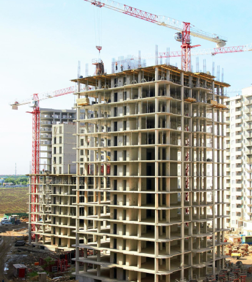

أفضل شركة ترميم بالرياض تبدأ بالتشخيص قبل التنفيذ| 0502833163
البحث عن افضل شركة ترميم بالرياض لا يجب أن يعتمد على السعر فقط. الشركة المناسبة تبدأ بالتشخيص، تفهم حالة المبنى، وتشرح لك ما يجب إصلاحه الآن وما يمكن تأجيله، ثم تحول ذلك إلى خطة تنفيذ واضحة.

معايير اختيار افضل شركة ترميم
من أهم المعايير: خبرة الشركة، وضوح البنود، فهم مشاكل التمديدات والشروخ، جودة المواد، وطريقة إدارة العمال داخل الموقع. افضل شركة ترميم لا تَعِد بنتيجة عامة دون فحص التفاصيل.
الفرق بين شركة ومقاول فردي
اشهر شركات الترميم في الرياض غالباً تقدم تنظيماً أفضل للأعمال المتداخلة، بينما قد يناسب المقاول الفردي بعض المهام الصغيرة. المهم أن يكون نطاق العمل واضحاً مهما كان نوع المنفذ.
لماذا يبدأ الترميم بالتشخيص؟
التشخيص يحميك من صرف الميزانية على الشكل الخارجي بينما المشكلة الأساسية في السباكة أو الرطوبة أو الشروخ. افضل شركة مقاولات وترميم بالرياض تضع التشخيص قبل التشطيب.
مؤشرات عرض السعر الجيد
العرض الجيد يوضح المواد، مراحل التنفيذ، مدة العمل، البنود المستثناة، وطريقة التعامل مع المخلفات. ويمكن مقارنة العرض بخدمات الموقع مثل ترميم مباني ومنازل بالرياض ورفع المخلفات.
متى تتواصل مع شركة ترميم؟
تواصل عندما يكون لديك وصف أولي وصور للموقع، أو عند ظهور تشققات ورطوبة وتلف في التشطيب. رقم 0502833163 يساعدك على إرسال التفاصيل وبدء الترتيب.
كلمات البحث المرتبطة بهذه الخدمة
يركز هذا الدليل على افضل شركة ترميم بالرياض داخل الرياض، مع مراعاة كلمات مرتبطة مثل افضل شركة ترميم، اشهر شركات الترميم في الرياض، افضل شركة مقاولات وترميم بالرياض، افضل مؤسسة ترميم مباني الرياض. الهدف هو مساعدة الباحث على فهم الخدمة قبل التواصل، سواء كان يبحث عن افضل شركة ترميم بالرياض أو يقارن بين الخيارات المتاحة حسب نية البحث: مقارنة/اختيار.
الكلمات المفتاحية في المقال
- افضل شركة ترميم بالرياض
- افضل شركة ترميم
- اشهر شركات الترميم في الرياض
- افضل شركة مقاولات وترميم بالرياض
- افضل مؤسسة ترميم مباني الرياض
أسئلة شائعة
هل الأفضل اختيار الأرخص؟
الأرخص ليس دائماً الأفضل، خصوصاً إذا كان العرض غير واضح أو يتجاهل سبب المشكلة.
ما أهم سؤال قبل التعاقد؟
اسأل عن سبب المشكلة وخطوات المعالجة قبل السؤال عن التشطيب النهائي.
هل تقدم الشركة ترميم شامل؟
يمكن ترتيب أكثر من بند داخل الترميم حسب حالة الموقع ونطاق الخدمة المطلوب.
تحتاج خدمة ترميم في الرياض؟
اتصل على 0502833163 أو أرسل صور الموقع والتفاصيل عبر واتساب لنرتب الخطوة المناسبة.
أرسل التفاصيل عبر واتساب ←